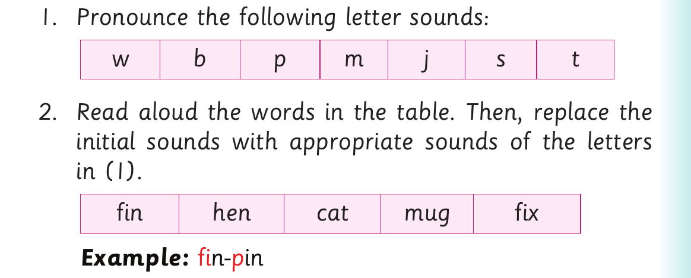

Replacing initial sounds - Activity 3
(b) I bake a cake every week. (c) Look at my book. (d) That man has a pan. (e) The boy has a toy.

6. Read the following tongue twister fast: A coy boy carries a toy with joy.
Activity 3

1. Pronounce the following letter sounds: w b p m j s t 2. Read aloud the words in the table. Then, replace the initial sounds with appropriate sounds of the letters in (1). fin hen cat mug fix Example: fi n- p in
3. Pronounce the new words you have formed in (2). 4. Read the following sentences aloud: (a) Ben can pat a cat. (b) I saw ten lions in the den. (c) We have a jug and a mug. (d) A hen cannot hold a pen. (e) She threw an old kit into the pit.